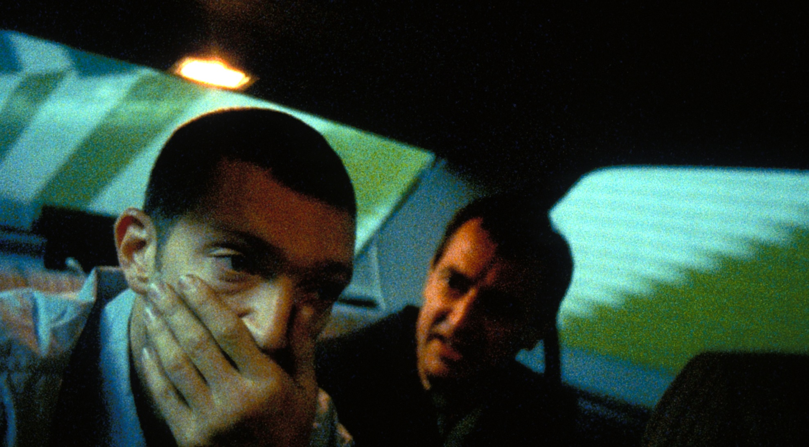
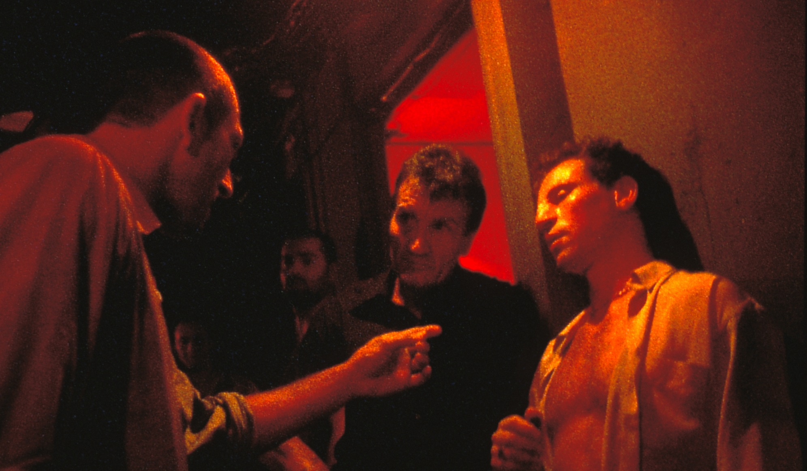
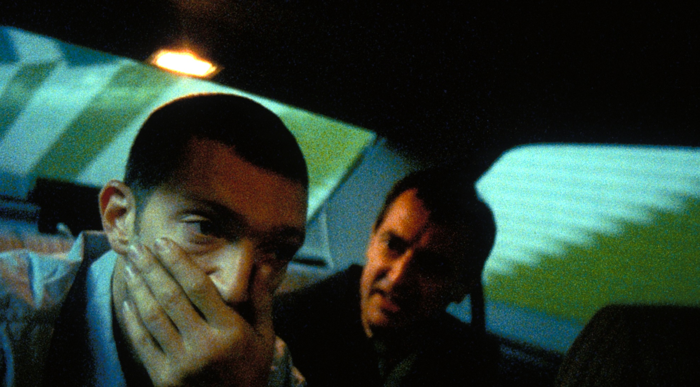
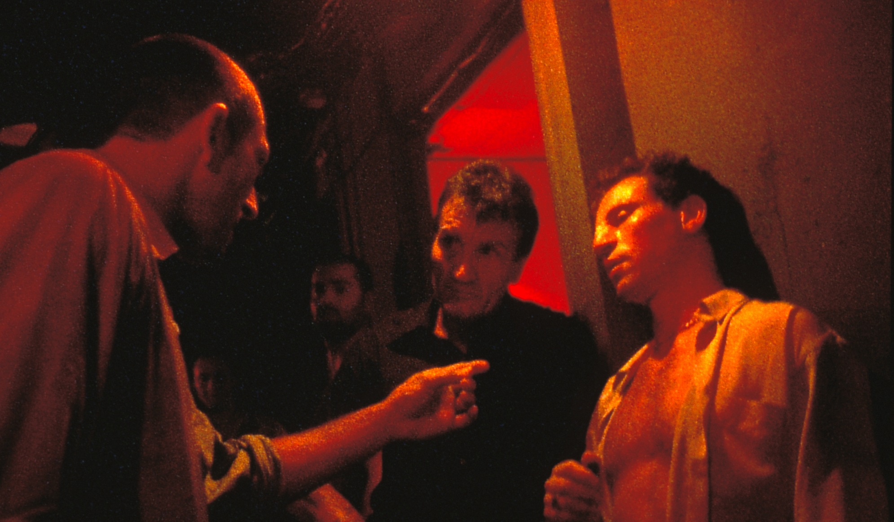

IRREVERSIBLE
Events over the course of one traumatic night in Paris unfold in reverse-chronological order as the beautiful Alex is brutally raped and beaten by a stranger in an underpass tunnel
"Irreversible" is a 2002 film by Gaspar Noé. It is a brutally raw and unapologetically violent film that explores the themes of vengeance, love, and the inevitable cycle of life and death. The film begins with a brutal and graphic rape scene, which serves as a visceral and disturbing introduction to the world of the film. The camera follows two men, Marcus and Pierre, as they search for the man who committed the rape. As the story unfolds, we see the events of the night leading up to the rape in reverse chronological order. This structure adds a layer of tension and urgency to the film, as we are constantly reminded of the terrible events that are to come.
The film is shot in a frenetic and disorienting style, with long takes and an intense focus on the characters. The camera work is often dizzying and disorienting, adding to the sense of alienation and confusion felt by the characters. One of the most striking elements of "Irreversible" is the reverse chronological order of the narrative. By starting with the end and working backwards, the film creates a sense of inevitability and inescapability. We know what is coming, and we cannot look away.
 



"Irreversible" is a film that is both beautiful and brutal. The violence is unflinching and shocking, and serves as a stark reminder that life can be cruel and unpredictable. But amidst the violence and chaos, there are moments of beauty and tenderness, such as the scene between Marcus and Alex in a subway station, which is shot in a single take and is a rare moment of emotional connection in the film.
It is not an easy film to watch. It is violent, challenging, and emotionally draining. But it is also a film that demands to be seen. It is a powerful and important work of art that forces us to confront the darkest aspects of human nature. Overall, "Irreversible" is an intense and unforgettable piece of cinema. It is brutal, beautiful, and unapologetically honest. It is a film that will stay with you long after the credits roll, and one that is sure to provoke debate and discussion for years to come.